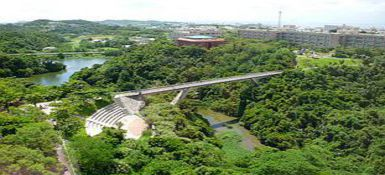

サイトマップ
問い合わせ先一覧
交通・アクセス
ホーム
한국어
中文
English
日本語
入学希望者の皆さまへ
在学生・保護者の皆さまへ
卒業生の皆さまへ
企業・研究者の皆さまへ
社会人・地域の皆さまへ
大学情報
学部・院等
入試情報
教育・研究
国際・留学
社会連携
就職情報
研究室
学生生活
ホーム
大学情報

大学情報
学長メッセージ
学長あいさつ
学長・理事・副学長・監事
憲章・理念
琉球大学憲章
大学の目的・基本理念
琉球大学男女共同参画宣言
ダイバーシティ推進宣言、ダイバーシティ推進のための基本方針[PDF]
女性役員・管理職別の登用目標[PDF]
次世代教育支援対策推進法に基づく国立大学法人琉球大学一般事業主行動計画[PDF]
教育研究上の目的
学部[PDF]
研究科[PDF]
琉球大学の概要
琉球大学概要
沿革概要
歴代学長
役員及び役員会等の構成[PDF]
学部・大学院・センター紹介
琉球大学の歌
学則
琉球大学学則[PDF]
琉球大学大学院学則[PDF]
教職員募集・兼業依頼
教員募集（研究者を含む）
職員募集（非常勤職員[週30時間以内]含む）
職員への兼業依頼について
情報公開・公益通報
琉球大学の法人資料
21世紀 知の津梁（第２期中期計画概要）
学校教育法施行規則による教育情報の公表
入札関連情報
入札関連情報[工事及び役務（施設運営部発注分）はこちらから]
地方公共団体からの寄付について
経営協議会会報・資料
経営協議会での意見等への本学の取組状況
情報公開制度・個人情報保護制度
琉球大学法人文書
公益通報窓口
学年歴（iCal形式）
広報
公表・記者発表
報道一覧
学内ニュース
イベント・学会・研究会等情報
琉大ニュースレター（バックナンバー）
琉球大学学報（バックナンバー）
琉大速報（バックナンバー）
大学紹介ビデオ「琉球大学ふしぎQ」（2011年3月制作）
大学紹介ビデオ「個性豊かな琉球大学」（2006年）
やわらかい南の学と思想
ウェルカム・プラザからの情報発進
琉大の本
その他の情報
大学施設見学についてのご案内
キャンパス計画[PDF]
環境への取組
ハラスメント相談窓口
琉球大学の名称・学章・ロゴマークの使用等について
大学施設の利用案内
奥の山荘の利用について[PDF]
後援財団・同窓会
琉球大学でいご会
このページのTOPへ
このサイトについて
|
お問い合わせ
|
交通・アクセス
|
関連サイト
国立大学法人
琉球大学
〒903-0213 沖縄県中頭郡西原町字千原1番地
Copyright(C)1997-2015,UNIVERSITY OF THE RYUKYUS